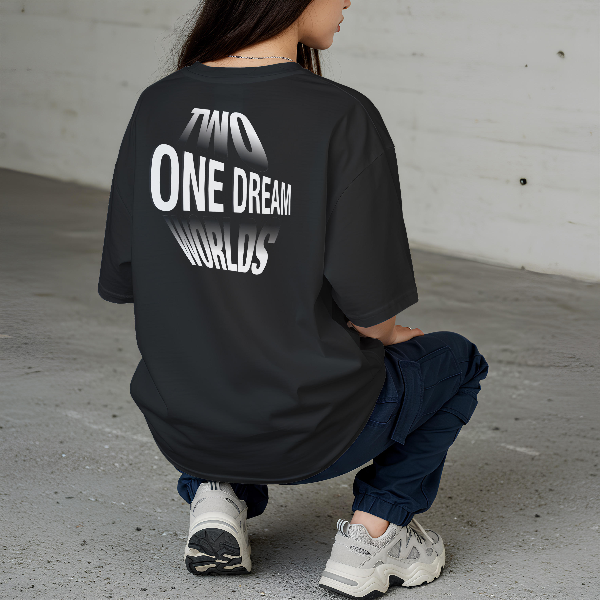
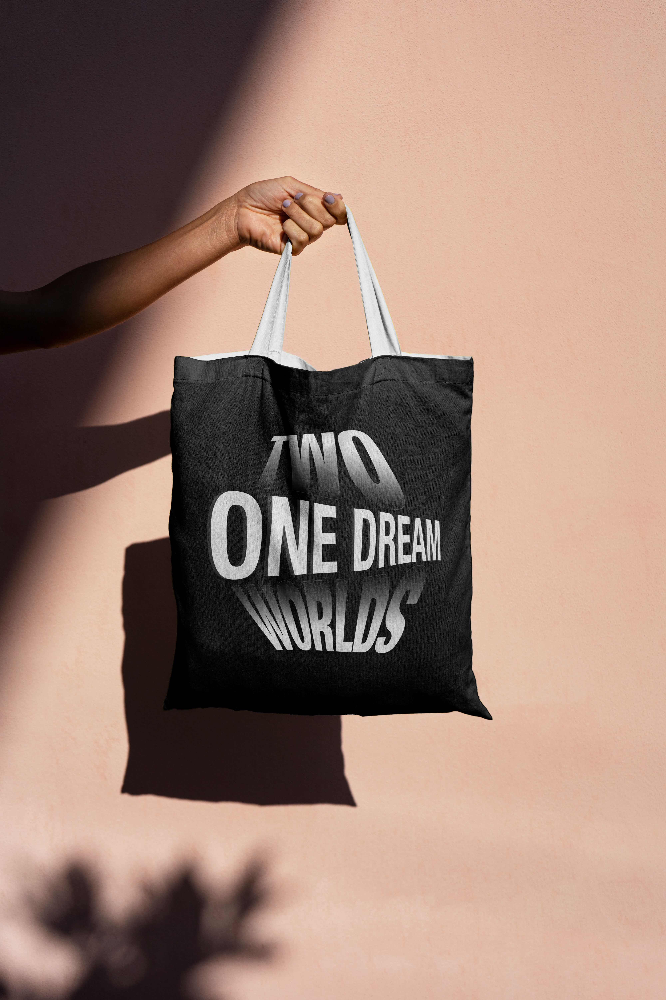
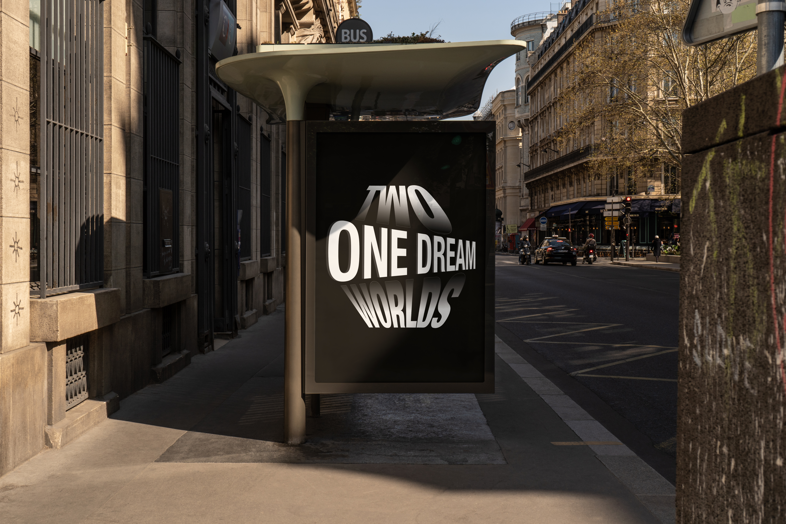
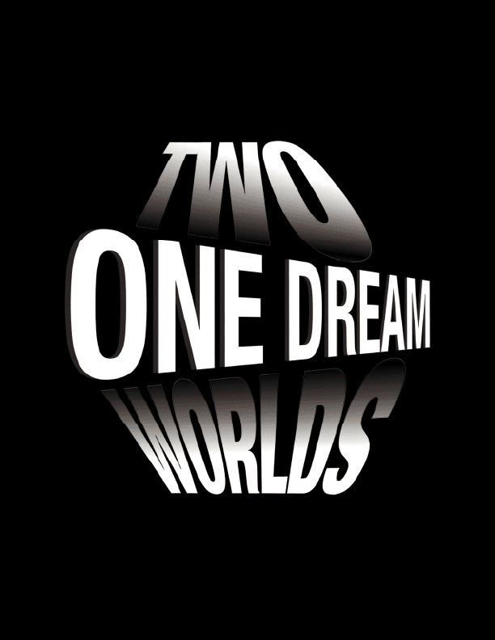
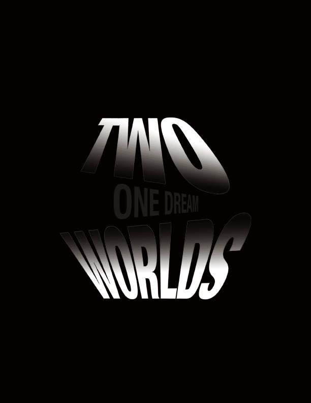
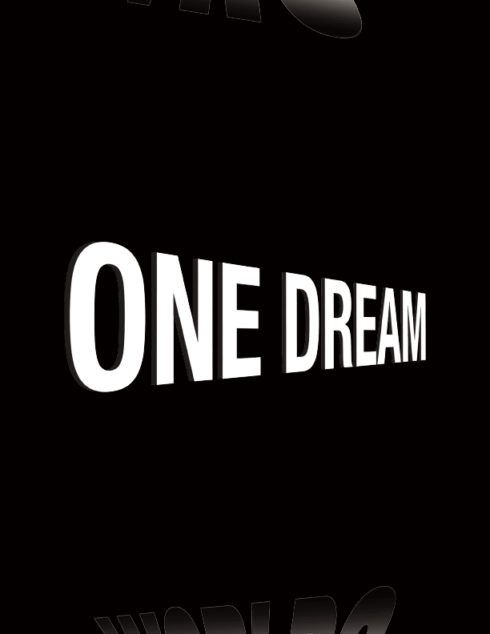

Mantra Merch + Dynamic Type
Mantra Merch is a typographic merchandise project based on the mantra “Two Worlds, One Dream.” It explores identity, ambition and transition, the feeling of being caught between where you come from and where you’re headed. Through posters, gifs and merch mockups, the project turns a personal mantra into a universal reminder to move towards a shared vision.

Concept
This project grew from the experience of living between two very different worlds, each shaping who I am in its own way. While the contrast between them often feels conflicting, they are both tied to a single shared dream and direction. The concept explores that tension and eventual merging, using design to visualize how separate realities can slowly come together into one unified vision.
Merchandise Mockups



Gifs



Process
Reflection
Working on this project made me realize how closely design is tied to identity. Turning a personal mantra into a visual system helped me understand how typography, scale and motion can express feelings that are often difficult to put into words. It also taught me to trust the process and see design as a space for reflection, not just execution.